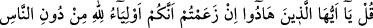
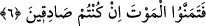

yüksek değerini ve derecesini, makamının yüksek durumunu bilmez.
Nükteci bir zâtın anlatılan bir nüktesi ne kadar güzeldir! Bir yemek dâvetinde
bulunmuş, ama kendisine kimse iltifat etmemiş, en aşağı bir yere oturtmuşlar. Oradan
hemen çıkıp emanet olarak çok değerli elbise alıp giymiş ve bu toplantıya dönmüş. Onu
büyüklerin giydikleri kıyâfetle gördüklerinde ona itibar etmişler ve önem vererek en
yüksek yere oturtmuşlar. Yemek gelince de elbisesinin yenine: “Ye bakalım”, demiş.
Yazık ki, kürk, elbise ne yemekten ne de tadından anlar. Şekilcilerin gözü yalnız dış
görünüşe değer vermektir, üstünlüğü ancak süste ve nakışta görürler. Bu görüş ise
mânâları ve gerçekleri anlamaktan ne kadar uzaktır..
“Allah’ın âyetlerini yalanlamış olan kavmin durumu ne kötüdür!” Yâni Allah’ın
âyetlerini yalanlamış olan topluluk örnek olmak bakımından ne kötü örnektir! Onlar da
Muhammed (s.a.)’in peygamberliğinin gerçek olduğuna şâhidlik eden Tevrat’taki
âyetleri yalanlayan yahûdilerdir.
“Allah zâlimler topluluğunu doğru yola iletmez.” Yalanlamayı tasdik yerine
koyanları, yahut, yahûdi ve benzerleri gibi kimselerin yardım etmek yerine düşmanlığı,
mutlu olmak yerine şakaveti, hidâyeti yerine sapıklığı seçerek kendi nefislerini ebedî
azaba atmak sûretiyle kendilerine zulmedenleri Allah doğru yola iletmez. Bu âyette,
onların durumları eşeğin durumuna benzetilerek kötülenmiş, yaptıklarının çirkinliği
ortaya konmuştur. Çünkü çirkine benzetilen çirkindir. Gerçekten Cenab-ı Hak:
“Şüphesiz ki, seslerin en çirkini merkeplerin sesidir” (Lokman, 31/19) buyurmuştur.
O halde câhilin ve asılsız iddiâcının sesi merkebin sesi gibi çirkindir ve daha
aşağılıktır. Çünkü onların sesi zarardan başka bir şey değildir. Merkep ise yük taşır, ona
kadınlar ve erkekler binerler.
Hayatü’l-hayevân adlı eserde şöyle denilmiştir: Ehlî merkebin tırnağından bir yüzük
yapılır ve sar’a hastası olan biri takınırsa bir daha sara olmaz. Bundan başka merkebin
diğer hayvanlara göre hem cinsiyle eşleşme gücü çok fazladır. Bu da hayvana âid
biyolojik bir durumdur. İnsanda da bulunan bu kabiliyeti insan iffetle değiştirirse,
anlatılan bu kötülüğe benzemekten kurtulur, selâmette kalır.
İlmiyle amel etmeyen nice âlimlerin gözünün haramda dolaştığını, evli olmalarına
rağmen dini eğitimle bu şehvet duygularına hakim olmayıp düzeltmedikleri için zinâ
cürmünü işledikleri görülmektedir. Şeriat ve din onların yalnız sözlerinde kalır,
amellerine ve yaşayışlarına geçmez. Allah’ın düşmanlığına ve azâbına sebep olacak
hareketlerden koruması için yine O’na sığınırız.
6. De ki: Ey yahûdiler! Bütün insanlar değil de, yalnız, kendinizin Allah’ın